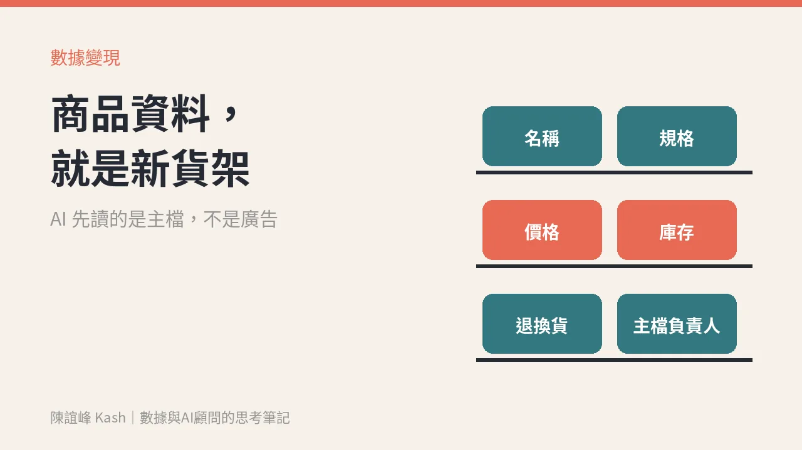

你的商品資料，正在變成 ChatGPT 上的新貨架
OpenAI 開放商家認領檔案。先別急著搶位子，先問三件事：商品主檔誰在管、多久更新、AI 講錯價格誰負責。

客人問 AI「這兩款差在哪、哪一款適合我」的時候，AI 先讀的是什麼？
不是你的廣告創意，也不是你的品牌故事。是你的商品資料：名稱、規格、價格、庫存、退換貨規則。
這週 X 上很多人在討論同一件事。11 月 10 日，OpenAI 推出 Businesses in ChatGPT 的 beta 版。我把官方說明讀完，整理成老闆聽得懂的版本。
發生了什麼事
OpenAI 開了一個叫 Business Hub 的後台。商家可以在裡面認領自己在 ChatGPT 上的檔案，通過驗證後，更新基本資料，也可以上傳附有價格和庫存的商品 feed。
後台會給彙整過的數據，例如你的商家被提到幾次、帶來多少網站點擊，以及在哪些對話主題裡被引用。OpenAI 說不會把使用者的對話內容交給商家，數據也要累積到一定量才看得到。
另一個是 Business Agent：商家可以做一個用自家資料回答客人問題的代理，客人在 ChatGPT 裡點進你的檔案，就能跟它聊。
同一週，ChatGPT Ads 也寄來產品更新：新的出價方式可以設 Target CPA，也就是你願意為一次購買或名單付多少錢；商品 feed 廣告可以指定國內的特定區域投放。
先別寫成「快去搶」
這件事有幾個條件，要先講清楚。
- 認領檔案，官方說只要在 ChatGPT 有提供服務的地區、通過驗證，就可以申請。
- Business Agent 目前只開放給美國符合資格的電商與線上服務業。
- 實體店家和餐廳，目前只能認領既有的美國檔案。
- 官方說明也寫了：接上商品 feed，不代表 ChatGPT 就會推薦你的商品。
台灣什麼時候全面開放，我沒有查到時程。所以這篇不是叫你明天就去卡位，而是趁還沒輪到你，先把家裡整理好。
為什麼這件事跟生意有關
過去我們把商品資料當成後台的事：上架用、對帳用、做報表用。
AI 通路改變了這個順序。當客人不再一頁一頁逛，而是直接問「預算三千、送長輩、哪一款好」，回答他的那段話，材料就是你的商品主檔。主檔寫得清楚，AI 才講得清楚；價格和庫存沒更新，AI 就可能把錯的答案講得很有自信。
數據不是報表，是下一筆生意。商品資料在這裡就是貨架本身。
老闆該先問的三個問題
第一，商品主檔誰在管？
很多公司的商品資料散在三個地方：電商平台一份、ERP 一份、行銷手上的 Excel 一份。三份對不起來，是常態。要先有一個人、一份主檔，說了算。
第二，多久更新一次？
價格和庫存是最容易出錯的兩個欄位。促銷檔期換價、門市缺貨，主檔有沒有跟著動？如果更新靠人工每週一次，那 AI 通路上的答案就是一週前的你。
第三，AI 講錯價格，誰負責？
這題最常被跳過。客人拿著 AI 給的價格來問，你認不認？客服怎麼回？這不是技術問題，是政策問題，要在上架之前先定好。
這個月可以先做的事
不用等開放，現在就能做：
1. 挑出營收前二十名的商品，檢查名稱、規格、價格、庫存、退換貨規則，在各通路是否一致。 2. 把「客人最常問的五個比較問題」寫下來，檢查你的商品資料答不答得出來。答不出來的，就是要補的欄位。 3. 指定一個主檔負責人，訂好價格和庫存的更新頻率。 4. 寫一頁「AI 通路上出錯怎麼處理」的規則，讓客服和門市有依據。
等到開放的那天，你要比的不是誰先註冊，而是誰的資料讓 AI 講得最準。
你的商品資料，現在經得起一個客人問三個問題嗎？